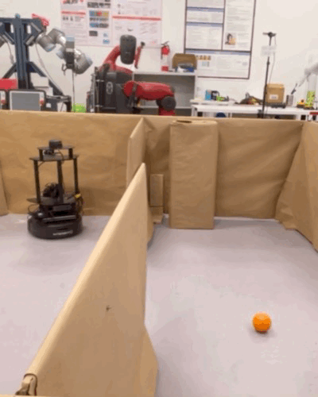

SpheroHunter
Tracking down Sphero with occlusions
We designed an algorithm that lets a LoCoBot track and follow a Sphero by predicting where it is, even when walls and the maze structure hide it from view.
Overview
Occlusion is a common failure for visual tracking in cluttered spaces. SpheroHunter focuses on maintaining an estimate of the Sphero’s location despite when the target cannot be seen. It then recovers its pursuit when the target is located in the camera’s field of view.
The system was developed in a maze environment where the Sphero can move out of sight behind obstacles, requiring prediction rather than purely reactive following.
Demo
